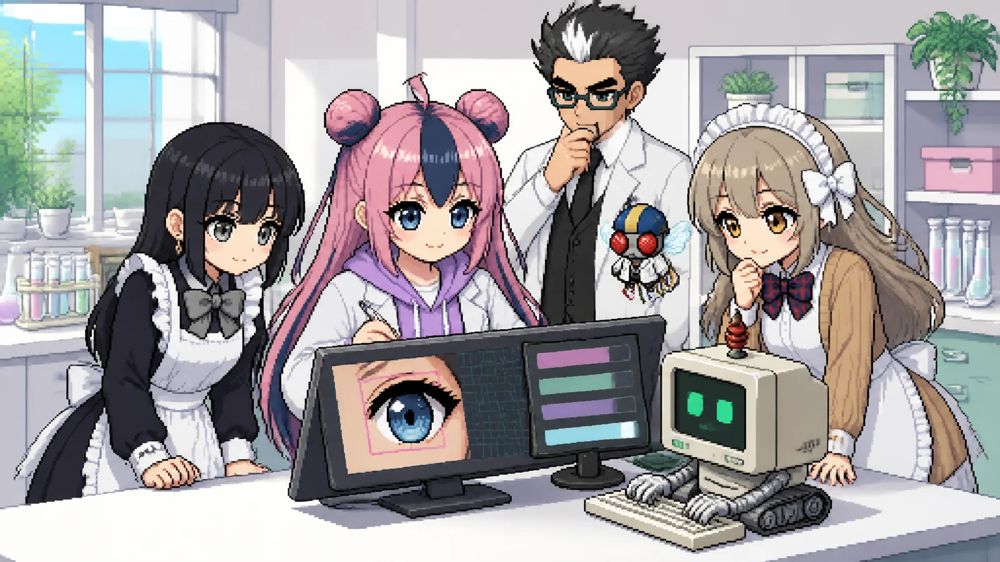
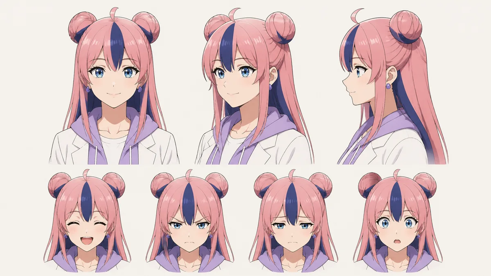
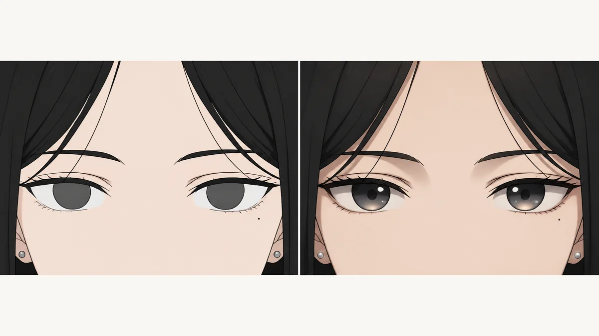
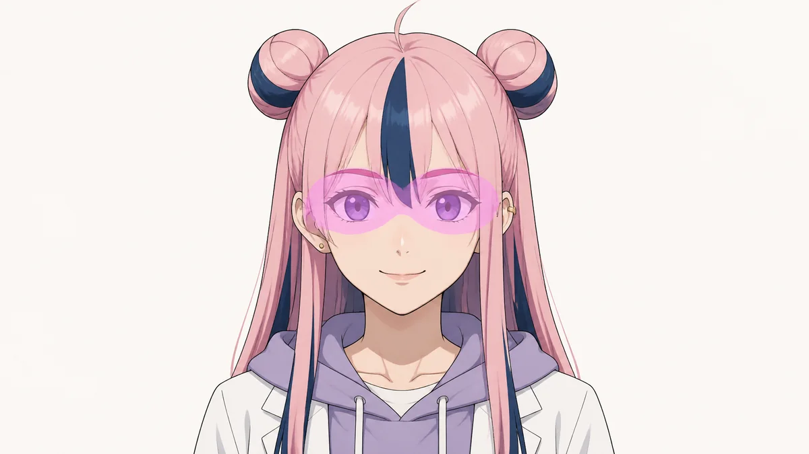
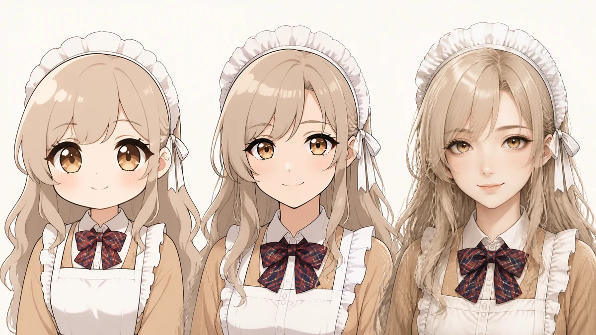
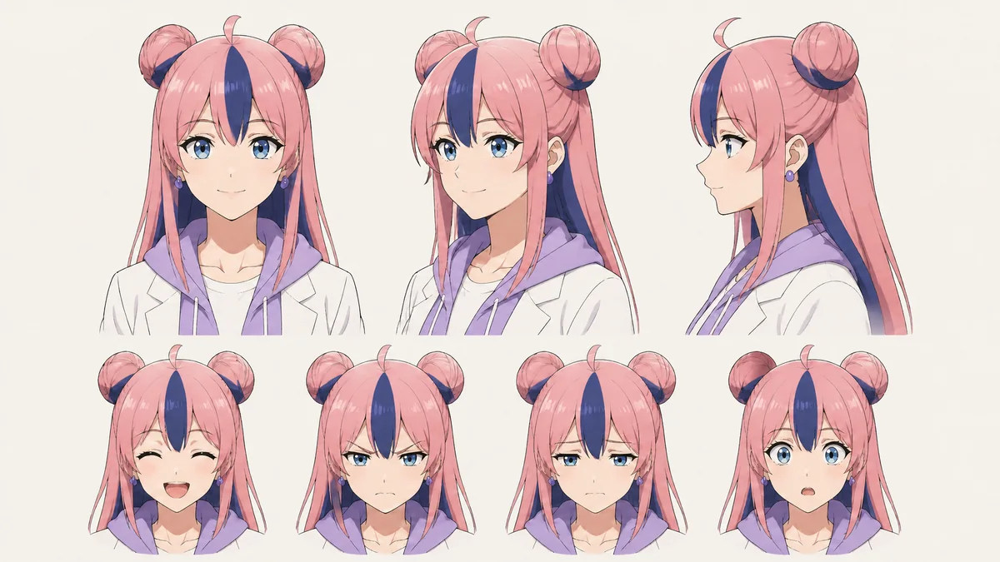
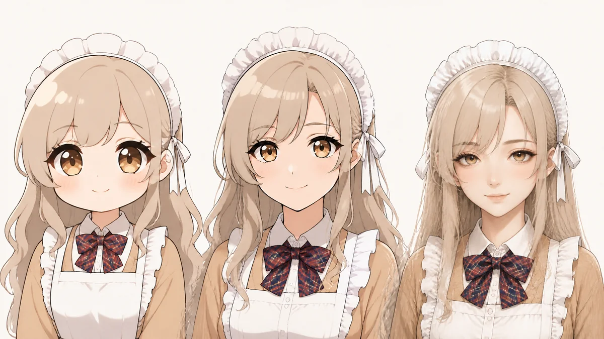
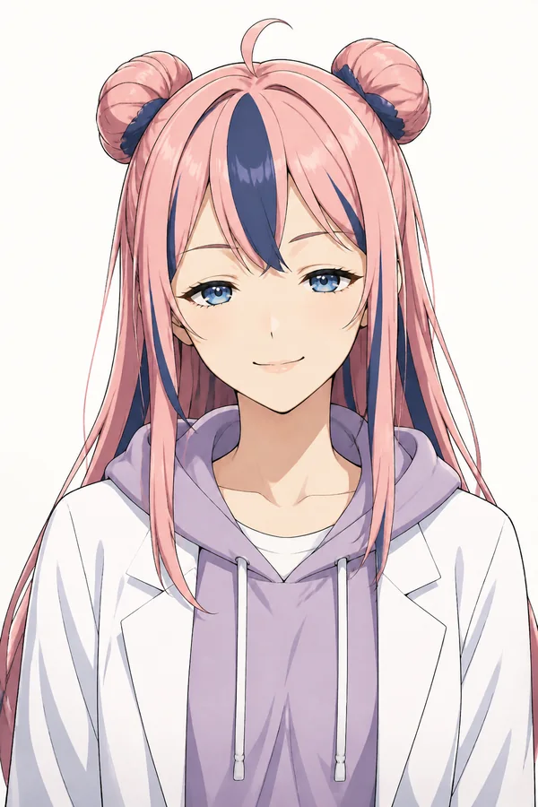
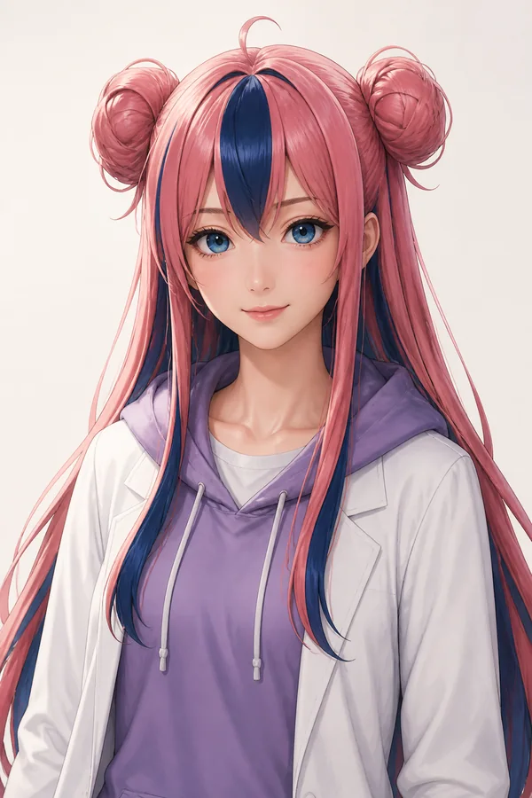

오늘의 과제

박사오늘은 AI에게 디테일을 알려 준다. 무엇이라고 쓸까?

주판봇'ultra detailed, best quality, masterpiece'! 이게 정답 아닙니까?

초파리 연구원어디를 얼마나 자세히? 그 말로는 코만 사진처럼 나올 수도 있어. 부위마다 적자.

조수 하루부위마다… 눈·코·입·머리 다요?

이번엔 AI도 모델입니다. 주판봇은 '아주 디테일하게, 고퀄리티로'라고만 씁니다. 초파리는 눈·코·입·머리마다 그려 넣을 양을 따로 적습니다.
그림 실력·코드·수식을 몰라도 됩니다. 실험을 눌러 보며 따라오세요.
눈·코·입·머리의 정보량을 하나씩 적고, 그 차이를 1 이내로 맞춥니다
사진을 보정할 때도 '선명하게' 한 번보다, 눈은 조금, 머리는 그대로, 배경은 흐리게처럼 나눠 고쳐야 자연스럽습니다.
AI 그림 요청서를 쓰는 팀은 '부위별 정보량 표'를 정해 둡니다. 예를 들어 '눈 3, 코 2, 입 2, 머리 3'처럼 적고, 요청 문장은 그 표에서 조립합니다. 그래야 여러 장을 만들어도 화풍이 흔들리지 않습니다.


부위마다 정보량을 적고 차이를 1 이내로 맞추면, AI가 한 부위만 튀게 그리는 일이 줄어듭니다.
'ultra detailed' 같은 말은 모든 부위를 함께 올리거나, AI가 잘 아는 부위(대개 눈)만 올립니다. 쓰더라도 부위별 문장과 함께 씁니다.
같은 문장에서 캐릭터 이름만 바꾸면, 하루·시아·모아 세 사람이 같은 화풍으로 나옵니다.

'ultra detailed, best quality'만 넣었더니 눈은 반실사처럼 자세한데 머리는 단순하게 나왔습니다. 고퀄리티라는데 괜찮을까요?
부위끼리 정보량이 달라 한 그림 안에 두 화풍이 섞였습니다. 부위별 디테일 문장을 넣고, 그래도 튀는 부위는 3단계의 가림 영역으로 그 부위만 다시 그립니다.
흰자 색, 위쪽 그림자, 아래쪽 빛, 하이라이트, 선 색 — 2부의 레이어 순서를 다섯 조각의 문장으로 적습니다
요리 주문서에 '맛있게'보다 '소금은 마지막에, 불은 약하게'라고 적으면 맛이 덜 흔들립니다.
채색 담당이 따로 있는 작업에서는 '눈 채색 지정서'에 흰자 색·그림자 색·빛 색·하이라이트 개수를 적어 넘깁니다. AI 요청 문장도 같은 지정서 역할을 합니다.

다섯 조각 가운데 네 개 이상을 넣으면 눈이 얼굴에 녹아들고 깊이가 생깁니다.
하이라이트 하나만 넣은 문장은 반짝이긴 하지만 흰자와 눈동자가 평평해 스티커 같습니다.
캐릭터 눈 색은 조각 문장과 따로 'blue irises' 처럼 적어, 빛 조각이 눈 색을 바꾸지 않게 합니다.

칠하기 문장을 넣었더니 아래쪽 빛이 너무 세서 파란 눈이 주황으로 보입니다. 어떻게 할까요?
빛 색이 원래 눈 색을 덮었습니다. 'subtle warm glow on the lower iris, the iris stays blue'처럼 빛의 세기와 원래 색을 함께 적습니다. 2부 2단계의 불투명도 40~70%를 말로 옮긴 것입니다.
부분 수정(인페인팅)에서는 고칠 부위와 둘레의 작은 여유만 가리고, 다시 그려지는 몫을 계산해 봅니다

학교 수학으로 보면 — 넓이와 백분율 — 가로 × 세로가 넓이이고, 부분 ÷ 전체 × 100이 백분율입니다.
| 식 조각 | 뜻 |
|---|---|
| 그림 전체 넓이 | 가로 픽셀 × 세로 픽셀 |
| 가림 영역 넓이 | 칠한 영역의 가로 × 세로 |
| 여유 | 경계가 티 나지 않게 더하는 몫(10~20%) |

사진 속 얼굴의 작은 잡티를 지울 때 얼굴 전체가 아니라 잡티 둘레만 동그랗게 고칩니다.
AI 그림 수정에서는 '한 번에 한 부위, 한 가지 변화'가 원칙입니다. 눈과 입을 함께 고치면 어느 쪽이 실패했는지 알 수 없어, 부위마다 따로 가려 차례로 고칩니다.

눈 두 개는 여유 20%를 줘도 그림의 약 4%, 입은 약 2%만 다시 그려집니다.
경계 여유가 0이면 고친 곳과 원래 그림 사이에 이음매가 보이기 쉽습니다. 10~20%를 줍니다.
얼굴 전체를 가리면 사람이 바뀝니다. 고칠 부위가 여러 개면 하나씩 차례로 가립니다.

눈만 고치려고 가렸는데, 결과의 눈 색이 원래와 다르게 나왔습니다. 가림이 잘못된 걸까요?
가림은 맞고, 요청 문장에 눈 색이 빠졌을 가능성이 큽니다. 부분 수정 문장에도 'keep the blue iris color and the same eye shape'처럼 지킬 것을 적습니다.
단순한 그림·애니풍·반실사로 바꿔도 육각형 자리, 각막 순서, 이줄 모양은 그대로이고, 바뀌는 것은 그려 넣는 양입니다
같은 집 구조도 내부 장식만 바꾸면 분위기가 달라지지만, 방 위치는 그대로라 같은 집으로 알아봅니다.
캐릭터 굿즈 작업에서는 '단순(SD) 버전 설정화'를 따로 만들되, 눈 기울기와 머리 실루엣은 본 설정과 같게 맞춥니다. 그래야 아주 단순한 그림에서도 같은 캐릭터로 알아봅니다.
화풍이 바뀌어도 눈머리·눈꼬리 높이, 동공 자리, 귀 자리, 이줄 모양은 같습니다.
바뀌는 것은 선 밀도·코 표현·하이라이트 크기·머리 덩어리 수 같은 정보량입니다. 모든 부위를 함께 바꿔야 한 화풍이 됩니다.
요청 문장도 '지킬 것'(구조)과 '바꿀 것'(정보량)으로 두 문단을 나눠 적으면, 화풍만 바뀌고 캐릭터는 지켜집니다.

모아를 반실사로 바꿨더니 눈이 처진 눈으로 바뀌어 다른 사람 같습니다. 반실사라서 어쩔 수 없나요?
화풍이 아니라 구조가 바뀐 것입니다. 'keep the same eye shape: outer corners slightly higher than the inner corners'처럼 지킬 구조를 따로 적어 다시 요청합니다.
이 부에서 배운 원리를 그림 생성 AI(Genspark 등)로 직접 확인합니다. A는 이 페이지 그림을 실제로 만든 프롬프트, B는 원리를 하나 빼거나 바꾼 비교용 문장입니다.
참고 그림 내려받기: haru_anime_base · sia_anime_base · moa_anime_base · haru_sheet · sia_sheet · moa_sheet · doctor_sheet · fruitfly_sprites_6 · jupanbot_ref_genspark_v0 · pixel_style_ref_prev_cover
일곱 개 얼굴의 눈·코·입·머리 그려 넣은 양이 모두 같은지 봅니다.
첨부: refs/haru_anime_base.png, refs/sia_anime_base.png, refs/moa_anime_base.png
Illustration, wide 16:9. Art style: high-quality anime illustration, clean confident lineart, two-tone cel shading, natural adult proportions. Match the attached reference images exactly (face, hair, colors, accessories). All characters are adults in their twenties (the Professor is an adult man in his thirties); modest outfits exactly as described. Face design sheet of Haru (adult lab assistant, long straight pink hair with navy streaks and a thick navy streak down the center of the bangs, two round hair buns on top, small ahoge, big blue eyes), wearing lavender hoodie with white drawstrings over a white t-shirt, open white knee-length lab coat: top row three head-and-shoulders views (front, three-quarter, side profile facing left) on one level line; bottom row four small expression heads (joy, anger, sadness, surprise). The same level of detail on eyes, nose, mouth and hair in every head: anime eyes with soft lashes and two highlights, nose as a small tip with a short bridge line, simple mouth, hair in four or five clumps. Same person, adult. Light from the upper left. Plain off-white studio background. No text, no letters, no numbers, no logos, no watermark, no revealing clothing, not childlike, no school uniform, not resembling any famous anime character.
Same image, keep the same framing. Change only: in every head draw the nose in a detailed realistic way with nostrils and a shaded bridge; keep everything else simple. Still no text.

실제 결과: 반영되지 않았습니다. B의 코도 A처럼 작은 코끝뿐이고 시트 전체가 거의 같습니다. 같은 대화에서 '코만 실감 나게'처럼 화풍을 깨는 요청은 도구가 화풍을 지키려고 무시하는 일이 많습니다. 실패 그림 f6처럼 처음부터 새 대화에서 만들면 반영됩니다.
화풍이 바뀌어도 눈 기울기와 머리 실루엣이 그대로인지 봅니다.
첨부: refs/haru_anime_base.png, refs/sia_anime_base.png, refs/moa_anime_base.png
Illustration, wide 16:9. Art style: high-quality anime illustration, clean confident lineart, two-tone cel shading, natural adult proportions. Match the attached reference images exactly (face, hair, colors, accessories). All characters are adults in their twenties (the Professor is an adult man in his thirties); modest outfits exactly as described. Three front-view head-and-shoulders portraits of Moa (adult maid intern, long ash-beige wavy hair, white frilled maid headband with a white ribbon over her LEFT ear, amber eyes), wearing camel knit cardigan over a white blouse, red and navy plaid bow tie, white frilled apron in a row, in three levels of detail: 1) simple deformed style (nose as a tiny dot, one thick lash line, large highlights, hair as one or two shapes); 2) anime style (small nose tip with a short bridge, a few lash strands, two highlights, hair in four clumps); 3) semi-realistic painting (nose bridge with soft shading, many fine lashes and iris lines, small highlights, hair with fine strands). Keep the same structure in all three: outer eye corners slightly higher than the inner corners, same hair silhouette, white frilled headband and the ribbon over her LEFT ear. All clearly adult. Light from the upper left. Plain off-white studio background. No text, no letters, no numbers, no logos, no watermark, no revealing clothing, not childlike, no school uniform, not resembling any famous anime character.
Same image, keep the same framing. Change only: in the semi-realistic face make the eyes droopy (outer corners lower than inner corners) and the hair silhouette much flatter. Still no text.

실제 결과: 반실사 얼굴만 바뀌었습니다. 머리가 곧고 납작해졌고 눈이 조금 가늘고 처져, 세 얼굴을 나란히 보면 반실사만 같은 모아가 아니라 다른 사람처럼 읽힙니다. 화풍이 바뀌어도 눈꼬리 기울기와 머리 실루엣을 남겨야 하는 까닭을 이 쌍에서 알 수 있습니다.
이 부의 원리를 내 손으로 프롬프트에 옮겨 보는 과제 5개입니다. 과제마다 목표 → 순서 → 넣을 프롬프트 → 확인할 것 → 예상 결과 → 자주 생기는 문제 순서로 적었습니다. 예상 결과 그림은 아래 프롬프트로 실제로 만든 그림입니다(아직 받지 않은 그림은 '그림 준비 중'). 요청과 다르게 나온 곳은 '실제 결과'에 그대로 적었습니다. 결과는 매번 조금씩 다르니, 그림이 똑같지 않아도 '확인할 것'이 맞으면 성공입니다.
목표5부 1·2단계의 디테일 문장(부위별 정보량)과 칠하기 문장을 함께 넣어 하루의 정면 얼굴을 만듭니다. 7부 문장 공방에서 조립한 문장과 같은 꼴입니다.
왜 이 연습인가부위별 정보량과 칠하기를 따로 적으면 '아주 자세하게' 한 마디보다 결과가 덜 흔들립니다. 여러 장을 만들 때 기준 문장이 됩니다.
첨부할 참고 그림: refs/haru_anime_base.png, refs/haru_sheet.png — 참고 그림은 위 직접 만들어 보기에서 내려받을 수 있습니다.
Illustration, vertical 2:3. Art style: high-quality anime illustration, clean confident lineart, two-tone cel shading, natural adult proportions. Match the attached reference images exactly (face, hair, colors, accessories). All characters are adults in their twenties (the Professor is an adult man in his thirties); modest outfits exactly as described. Front view, chest-up portrait of Haru (adult lab assistant, long straight pink hair with navy streaks and a thick navy streak down the center of the bangs, two round hair buns on top, small ahoge, big blue eyes), wearing lavender hoodie with white drawstrings over a white t-shirt, open white knee-length lab coat, gentle smile, looking at the viewer. Detail sentence: anime eyes with soft lashes and two highlights; nose as a small tip with a short bridge line; simple mouth with a hint of lips; hair in four or five clumps with a few strands; consistent level of detail across the face. Painting sentence: off-white sclera; darker upper iris under the eyelid; subtle warm glow on the lower iris, the iris stays blue; line art around light areas tinted brown. Light from the upper left. Plain off-white studio background. No text, no letters, no numbers, no logos, no watermark, no revealing clothing, not childlike, no school uniform, not resembling any famous anime character.
실제 결과: 성공. 눈·코·입·머리의 그려 넣은 양이 고르고, 흰자는 순백이 아니며 눈동자 위가 어둡고 아래가 밝습니다. 번 두 개와 앞머리 남색 줄도 그대로입니다.
| 문제 | 이렇게 고칩니다 |
|---|---|
| 눈만 반실사처럼 자세하다 | 'soft lashes'를 'simple lashes'로 낮추고 'consistent level of detail'을 맨 앞으로 옮깁니다. |
| 번이 하나로 합쳐졌다 | 'two separate round hair buns on top, as in the reference'를 맨 앞에 적습니다. |
| 눈 색이 보라색이 됐다 | 'big blue eyes'를 칠하기 문장 앞에 한 번 더 적습니다. |
더 해 보기정보량을 모두 한 단계씩 올린 문장으로 새 대화에서 만들어, 같은 캐릭터의 반실사 판을 만들어 보세요(5부 4단계).
목표5부 3단계의 가림 영역 원리대로, d1 결과에서 두 눈만 칠해 '처진 눈'으로 바꾸고 나머지가 그대로인지 봅니다.
왜 이 연습인가얼굴 전체를 다시 만들면 머리 모양까지 바뀝니다. 고칠 부위만 가리면 다시 그려지는 몫이 그림의 몇 %로 줄어, 나머지는 지켜집니다. 03 얼굴 편에서는 작은 변화가 부분 수정으로 잘 반영되지 않았으니, 바뀌는 모습을 분명하게 적습니다.
첨부할 참고 그림: d1 결과 그림(d9_haru_detail_sentence) — 참고 그림은 위 직접 만들어 보기에서 내려받을 수 있습니다.
Inside the painted area only: redraw both eyes as gentle droopy eyes — the outer corners clearly LOWER than the inner corners — with relaxed eyebrows. Keep the blue iris color, the eye size, the two highlights and the off-white sclera. Do not change anything outside the painted area. All characters are adults. No text, no letters, no numbers, no logos.

실제 결과: 부분 성공. 눈과 눈썹만 바뀌고 머리·코·입·옷은 d1과 같습니다. 눈이 가늘어지고 눈꼬리가 조금 내려갔지만 '처진 눈'이라고 할 만큼 크게 내려가지는 않았고, 눈동자가 작아지며 아래쪽 빛이 약해졌습니다.
| 문제 | 이렇게 고칩니다 |
|---|---|
| 눈이 바뀌지 않았다 | 칠한 영역을 눈 바깥으로 조금 더 넓히고, 'clearly LOWER'를 'much lower'로 과장합니다. 그래도 안 되면 새 대화에서 d1 문장에 처진 눈 조각을 넣어 처음부터 만듭니다. |
| 눈썹 위 앞머리가 바뀌었다 | 앞머리를 칠하지 않았는지 확인하고, 눈썹 바로 위까지만 칠합니다. |
| 경계에 얼룩이 보인다 | 여유를 10~20%로 넓혀 다시 칠합니다. |
더 해 보기같은 방법으로 입만 칠해 '반쯤 연 입'으로 바꿔 보고, 2부 4단계 실험의 읽힘과 비교해 보세요.
목표5부 3단계의 가림 영역 원리대로 연습 1 결과(하루)에서 입만 칠해 크게 웃는 입으로 바꾸고, 눈이 그대로인지 봅니다.
왜 이 연습인가입을 바꾸면 도구는 눈까지 웃는 눈으로 바꾸려 합니다. 입과 입 둘레만 가리면 다시 그려지는 몫이 그림의 몇 %로 줄어 눈이 지켜집니다. 같은 눈에 다른 입이 되므로 2부 4단계의 비교가 됩니다.
첨부할 참고 그림: 연습 1 결과 그림(d9_haru_detail_sentence) — 참고 그림은 위 직접 만들어 보기에서 내려받을 수 있습니다.
Inside the painted area only: redraw the mouth as a WIDE OPEN happy laugh showing the upper front teeth as a straight row and a little of the tongue. Keep the same lip color and line style. Do not change anything outside the painted area — the eyes, nose, hair and clothes stay exactly the same. All characters are adults. No text, no letters, no numbers, no logos.
실제 결과: 받은 그림이 부분 수정 결과가 아니라 하루의 전신 설정 시트와 박사의 픽셀 그림을 모은 다른 그림이라 싣지 않았습니다. 부분 수정 기능으로 다시 만들어 받으면 넣겠습니다.
| 문제 | 이렇게 고칩니다 |
|---|---|
| 눈까지 웃는 눈으로 바뀌었다 | 가림 영역이 눈 가까이까지 올라갔는지 봅니다. 코 아래까지만 칠합니다. |
| 입이 얼굴보다 커서 어색하다 | 'mouth width about the distance between the pupils'를 덧붙입니다. |
| 거의 바뀌지 않았다 | 'WIDE OPEN'을 'very wide open, clearly laughing'으로 과장합니다. |
더 해 보기같은 방법으로 입만 '입꼬리가 내려간 다문 입'으로 바꿔, 차분한 눈에 슬픈 입이 붙으면 어떤 감정으로 읽히는지 보세요.
목표5부 4단계의 원리(화풍을 바꿀 때 눈꼬리 기울기·머리 실루엣·캐릭터 표시는 남기고 정보량만 바꾼다)를 문장으로 적어 반실사 하루를 만듭니다.
왜 이 연습인가v1.1 실습에서 반실사 모아는 머리가 납작해지고 눈이 처져 다른 사람처럼 읽혔습니다. 화풍만 바꾸라고 하면 구조까지 바뀌므로, 지킬 구조를 목록으로 적어 줍니다.
첨부할 참고 그림: refs/haru_anime_base.png, refs/haru_sheet.png — 참고 그림은 위 직접 만들어 보기에서 내려받을 수 있습니다.
Illustration, vertical 2:3. Art style: high-quality anime illustration, clean confident lineart, two-tone cel shading, natural adult proportions. Match the attached reference images exactly (face, hair, colors, accessories). All characters are adults in their twenties (the Professor is an adult man in his thirties); modest outfits exactly as described. Semi-realistic painterly illustration, front-view chest-up portrait of Haru (adult lab assistant, long straight pink hair with navy streaks and a thick navy streak down the center of the bangs, two round hair buns on top, small ahoge, big blue eyes), wearing lavender hoodie with white drawstrings over a white t-shirt, open white knee-length lab coat, gentle smile. Keep the structure (most important): the same eye shape as the reference with the outer corners slightly higher than the inner corners; the same hair silhouette with full volume; the two round hair buns, the small ahoge and the thick navy streak down the center of the bangs stay exactly as in the reference. Change only the detail: realistic skin shading, detailed iris and lashes, a softly shaded nose and lips, fine hair strands inside the same clumps. Adult woman in her twenties. Light from the upper left. Plain off-white studio background. No text, no letters, no numbers, no logos, no watermark, no revealing clothing, not childlike, no school uniform, not resembling any famous anime character.

실제 결과: 성공. 번 두 개, 앞머리 남색 줄, 머리 부피가 그대로라 한눈에 하루로 보이고, 피부와 눈동자만 자세해졌습니다. v1.1의 반실사 모아(머리가 납작해짐)와 달리 지킬 구조를 목록으로 적은 효과가 보입니다.
| 문제 | 이렇게 고칩니다 |
|---|---|
| 다른 사람처럼 보인다 | 지킬 구조가 빠진 경우입니다. 'Keep the structure' 목록을 프롬프트 맨 앞으로 옮깁니다. |
| 머리가 납작하다 | 'full voluminous hair, the same silhouette as the reference'로 과장합니다. |
| 어려 보인다 | 반실사에서 큰 눈을 남기면 생길 수 있습니다. 'adult face proportions, slender neck'을 덧붙입니다(6부 나이 쏠림). |
더 해 보기'Keep the structure' 줄을 지운 문장으로 새 대화에서 만들어, 같은 하루로 보이는지 비교해 보세요.
목표2부 3단계와 5부 3단계를 합쳐, 6부 연습 1의 결과(기쁜 모아)에서 눈썹만 칠해 슬픔의 눈썹으로 바꾸고 감정이 어떻게 읽히는지 봅니다.
왜 이 연습인가눈썹은 감정의 종류를 정합니다. 눈과 입은 웃는 그대로 두고 눈썹만 바꾸면, 감정의 종류만 바뀐 '웃으며 슬픈 얼굴'이 됩니다. 가림 영역을 눈썹만큼 작게 잡는 연습도 됩니다.
첨부할 참고 그림: 6부 연습 1 결과 그림(d11_moa_brow_fix) — 참고 그림은 위 직접 만들어 보기에서 내려받을 수 있습니다.
Inside the painted area only: redraw both eyebrows as SAD eyebrows — the inner ends clearly raised and the outer ends lowered — keeping the same color and thickness. Do not change anything outside the painted area; the eyes and the smiling mouth stay exactly the same. All characters are adults. No text, no letters, no numbers, no logos.
실제 결과: 받은 그림이 모아가 아니라 실제 사람 사진처럼 보이는 실사 인물이라 싣지 않았습니다. 바탕 그림(d11) 없이 새로 만들면 이런 일이 생길 수 있습니다. d11 그림을 부분 수정 기능으로 열어 다시 만들어 받으면 넣겠습니다.
| 문제 | 이렇게 고칩니다 |
|---|---|
| 눈썹이 거의 바뀌지 않았다 | 작은 변화라 반영이 약할 수 있습니다. 'very steep sad eyebrows'로 과장합니다. |
| 눈까지 슬픈 눈으로 바뀌었다 | 가림 영역이 눈에 닿았는지 보고 눈썹만 다시 칠합니다. |
| 앞머리가 지워졌다 | 눈썹이 앞머리에 가려 있으면 앞머리 사이로 보이는 부분만 칠합니다. |
더 해 보기같은 방법으로 눈썹을 '끝이 올라간 화의 눈썹'으로 바꿔, 6부 f8(어긋난 눈썹)과 같은 얼굴이 되는지 보세요.

| 항목 | 주판봇 | 초파리 |
|---|---|---|
| 닮음(캐릭터가 지켜졌나) | 5 | 9 |
| 원리(정보량·칠하기·가림) | 2 | 9 |
| 자연스러움 | 4 | 8 |
| 합계 | 11 | 26 |


점수는 이야기 속 예시입니다. 실제 그림을 평가한 값이 아닙니다.
| 주제 | 한 줄 | 작업에서는 |
|---|---|---|
| 1단계 디테일 문장 | 부위별 정보량, 차이 1 이내 + consistent level of detail | 정보량 표에서 문장 조립 |
| 2단계 칠하기 문장 | 흰자·위 그림자·아래 빛·하이라이트 둘·갈색 선 | 눈 색은 따로 적기 |
| 3단계 가림 영역 | 몫 = 가린 넓이 ÷ 전체 × 100, 여유 10~20% | 한 번에 한 부위 |
| 4단계 화풍 | 구조는 남기고 정보량만 바꾼다 | 지킬 것 / 바꿀 것 두 문단 |

이 페이지에 나온 개념·방법·비유·쓰임을 모았습니다. 검색하고, "설명 보러 가기"로 본문에 돌아갑니다.
지식 색인을 출처와 함께 파일로 내려받습니다. 서지 관리는 BibTeX·RIS, 온톨로지 편집은 Turtle, 그래프 도구는 CSV, 여러 페이지 합치기는 kg.json입니다.